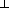

V,
V,
 C and
C and
 P
with the same sorts, where a subset of the sorts are
tagged as traceable, define
RecExp(V,C,P)
as extending Exp(V,C,P) with:
P
with the same sorts, where a subset of the sorts are
tagged as traceable, define
RecExp(V,C,P)
as extending Exp(V,C,P) with:
Given three signatures
V,
C and
P
with the same sorts, where a subset of the sorts are
tagged as traceable, define
RecExp(V,C,P)
as extending Exp(V,C,P) with:
| D | ::= | ...as before... | |
| | | local rec x; D | (Local recursive declaration) |
Add new judgements
 T traceable, which for this section just
inherits the tags from the signatures. Then the type rule for
local recursive declarations is:
T traceable, which for this section just
inherits the tags from the signatures. Then the type rule for
local recursive declarations is:
|
T traceable | |
| , x : T | |
D : (1, x : T, 2) in val |
|
(local rec x; D) : (1, 2) in val | |
Note that recursive declarations are only allowed in val: this restriction is based on the motivating denotational model, where non-trivial fixed points only exist in Cpo, not in Cpo. The restriction to traceable types is also based on this example: Cpo does not have fixed points for all objects, only those with least elements. So in this motivating example, V is Cpo, P is Cpo, and the traceable objects are those with least elements.
Previously, all of the graphs we have described have been acyclic. In order to give the semantics for recursive declarations, we allow cyclic graphs:
| [[local rec x; D in val]] | = |
This is an indexed fixed point becase:
| = | (Naturality of copy) | |
| = | (Naturality of Tr) | |
| = | (Indexed dinaturality of Tr) |
However, not all cyclic graphs can be expressed as a program. In particular:
However, our graphs do not have a trace, because of the restriction that only traceable sorts can be declared recursively. Instead, we use a weaker notion of partial traceability, where we impose the restriction that feedback edges are traceable. In the case where all types are traceable, the two notions coincide.
In an an appendix we define partially traced cartesian categories, and show that when the categories of cyclic graphs:
V)
 CGraph(V,C)
CGraph(V,C,P)
CGraph(V,C)
CGraph(V,C,P)
form the initial triple of categories:
C
P
with:
V.
C.
P.
A shuffle s is a morphism built only from composition, tensor, identity, symmetry, diagonal and terminal. A trace is uniform wrt shuffles whenever:
It is easy to show that any shuffle is strict, and so uniformity wrt shuffles is weaker than uniformity wrt strict morphisms.
Uniformity is, unfortunately, not algebraic, and it remains to be seen whether there is an algebraic axiomatization for flow graphs.